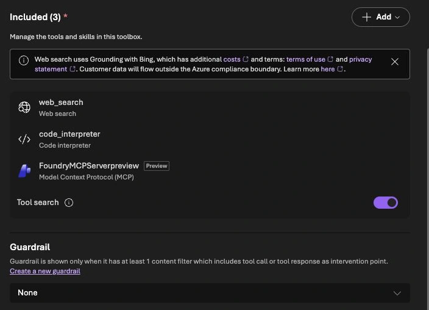

Foundry Tool Search: Reduce MCP Context, Keep Control
An agent can receive dozens of tool definitions before it reads the question it needs to answer. Every device report, ticket operation and directory lookup competes for space in that context.
Foundry Tool Search changes how those definitions reach the model. This guide explains the configuration and gives you a small, local payload experiment. The goal is to reduce unnecessary context while keeping the right tools discoverable and the same access boundaries in place.
The product references were checked on 20 October 2026. The payload experiment was run locally; it is not a measurement of a live Foundry deployment.
Tool Search became generally available in the September Foundry update. With toolbox_search enabled, an agent discovers capabilities through tool_search and invokes discovered operations through call_tool, rather than receiving every ordinary definition immediately. Release note
That is useful for an Intune assistant with many report tools. A request about a deviceâs compliance does not need the complete schema for creating an application, exporting every report and changing group membership.
Before changing anything, capture the initial tool list, a representative question and the operations used to answer it. Keep the model, instructions and task fixed for the comparison. Otherwise, a better answer might come from a model change rather than tool discovery.
Foundry Toolboxes are a grouping and configuration layer for tools. They do not turn all operations behind a connection into appropriate actions for every agent. Toolbox overview


Start with an isolated lab toolbox containing only approved read operations. This is an illustrative part of a toolbox-version request; replace the endpoint and connection identifier with your own existing configuration:
{
"tools": [
{ "type": "toolbox_search" },
{
"type": "mcp",
"server_label": "inventory",
"server_url": "https://inventory.example/mcp",
"project_connection_id": "inventory-readonly",
"tool_configs": {
"get_device_compliance": {
"pin": true,
"additional_search_text": "device compliance noncompliant device status"
}
}
}
]
}Use Foundry Toolkitâs toolbox editor or the documented version API. The configuration belongs to the toolbox version. Test its version-specific MCP endpoint before changing the version used by a production agent. A new lab toolboxâs first version becomes its own default, so do not mistake creating a lab resource for a safe production rollout. Configuration and verification
The pinned operation is an example of a capability needed almost every time. Pinning everything recreates the original problem. Additional search text should explain domain vocabulary; it should not contain credentials, customer examples or private data.
Verify discovery and authorization separately
MCP exposes tool listing and calling as different operations. A useful description helps selection, while the server must still validate inputs and enforce access. Do not treat a readOnlyHint annotation or a successful search result as authorization. MCP tools specification
For a small pilot, I would inspect three checkpoints:
| Checkpoint | Evidence I want |
|---|---|
| Initial listing | Discovery operations and expected pinned tools, rather than the entire catalogue |
| Search | The correct tool returned for a real user question |
| Invocation | A permitted call with a bounded scope and a traceable result |
Compare a fresh test identity and a warmed-up identity separately. Foundry also documents automatic pinning of frequently used tools. That means a later initial list can legitimately differ from a cold one. Record which tools were pinned explicitly and which appeared through usage.
For an Intune report, the backend should derive the callerâs permitted scope itself. A user prompt saying âuse the all-device groupâ must not expand that scope. A tool called get_device_compliance is only read-only if its implementation is read-only.
Measure payload size without inventing token savings
This small example compares JSON definition payloads. Save it as payload_check.py and run python3 payload_check.py. It needs no credentials and does not call a model:
import json
def size(value):
return len(json.dumps(value, separators=(",", ":")).encode())
def tool(i):
return {
"name": f"read_report_{i:02}",
"description": "Read one authorized device report. Never modify devices.",
"inputSchema": {
"type": "object",
"properties": {"group_id": {"type": "string"}},
"required": ["group_id"],
},
}
catalogue = [tool(i) for i in range(40)]
meta = [{"name": "tool_search"}, {"name": "call_tool"}]
print({"eager_bytes": size(catalogue),
"initial_bytes": size(meta),
"with_two_tools_bytes": size(meta + catalogue[:2])})
assert size(meta + catalogue[:2]) < size(catalogue)These are synthetic descriptors, including simplified meta-tools. The numbers describe this fixture, not the exact request format sent by Foundry. UTF-8 bytes are not tokens, and a smaller initial payload is not a billing result.
For a live comparison, capture the providerâs reported input usage across the entire task: discovery, selected definitions, tool results and retries. Also measure successful task completion and latency. A search that misses the right operation can erase the value of a smaller initial context.
Use a small discovery regression set
Tool selection is worth testing with the language your colleagues use, not only the operationâs exact name.
| User request | Expected behavior |
|---|---|
| âWhy is device DEMO-01 noncompliant?â | Find the approved compliance read |
| âWhich rule failed on this laptop?â | Find the same capability using different wording |
| âRemove the failing policyâ | No write capability in this read-only toolbox |
| âLook at another customerâs devicesâ | Deny the scope, even if a matching read tool exists |
| âShow yesterdayâs resultâ | Return an observation time or explain that historical data is unavailable |
| An unrelated request | Say that the required capability is unavailable, without substituting an unsafe operation |
Keep the expected operation and permission outcome with each test. Review the search result and the final call independently. âThe answer sounded rightâ is not sufficient evidence of correct discovery.
Roll out one task before the whole catalogue
I would start with one device-report task, then add a second task that needs a different subset. Repeat the tests when a tool name, description, schema, connection or toolbox version changes.
Keep the previous toolbox version and agent configuration available for rollback. If discovery quality drops, first inspect the query, description and search results. Adding every tool back to the initial context should be a deliberate rollback decision, not the default troubleshooting step.
My Skills versus MCP guide covers where instructions and integrations differ. This change addresses a narrower question: how much of the available tool surface should the model receive for this particular task?